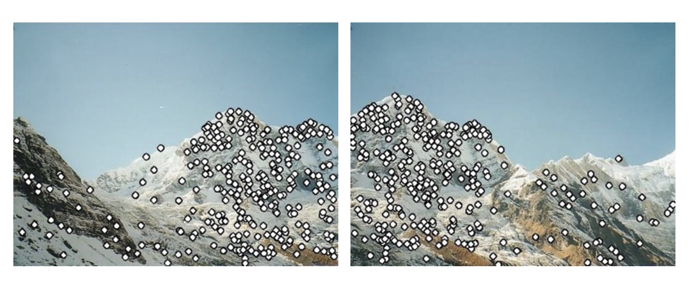
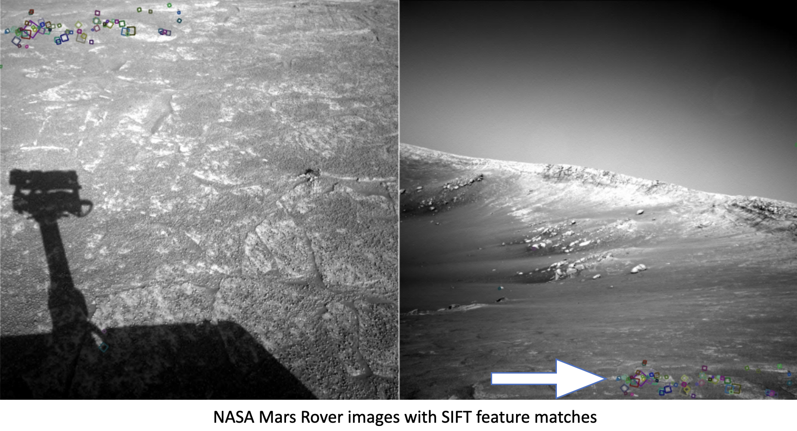
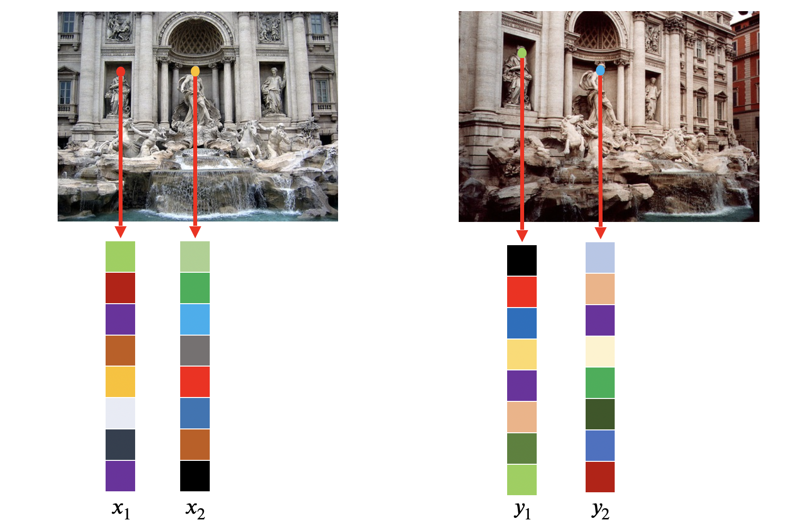
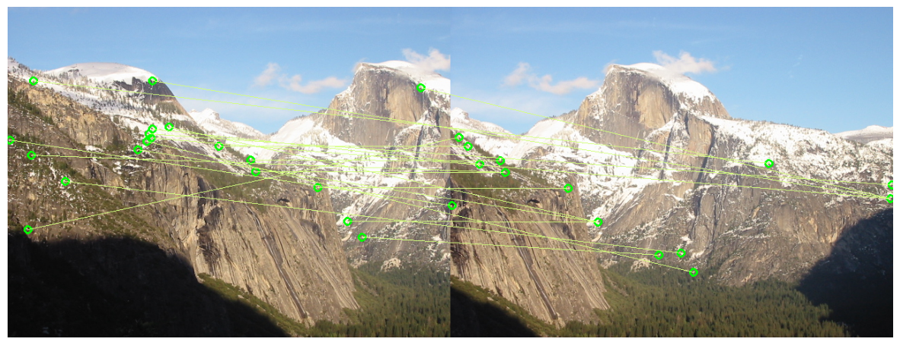
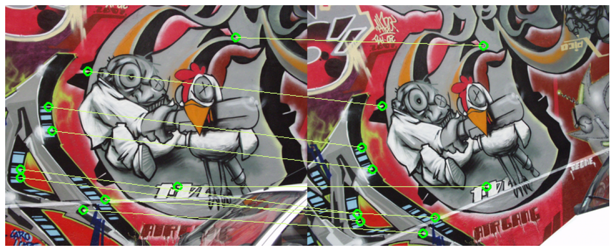

- A project in Python focused on detecting and matching features across different images to facilitate panorama stitching and 3D-world reconstruction.
- Utilized Harris corner detection for identifying points of interest in images, including the calculation of Harris scores and orientation for pixel-wise image analysis.
- Conducted comprehensive testing of individual components (Harris corner detection, feature descriptors, feature matching) and full system integration to ensure accuracy and reliability of the reconstruction process.
- Skills/Technologies: Python, NumPy, SciPy, OpenCV, Matplotlib, matrices modelling
About the Project
"Reconstruct the 3D World"
DEMO

Objectives
The goal of feature detection and matching is to identify a pairing between a point in one image and a corresponding point in another image

Corner Detection
Good feature points should be reproducible and distinctive enough that they are easy to match. Corners/edges have such good characteristics that we can easily recognize the point by analyzing small patches (colored boxes pointed by arrow).
Shifting the patch in any direction should give a large change in intensity. I utilized Harris Detector for corner detections.

Feature Descriptors and Matching
Feature description: For each detected feature point (or pixel), describe the point using Multiscale Oriented Patche descriptors (MOPS) obtained by: Translate -> Rotate -> Scale -> Translate. (Examples shown in the picture on the left)
Feature Matching: Measure the similarity between every pair of descriptors. Applied ratio difference between best and the second best match to avoid ambiguous matches.

Sample 1
